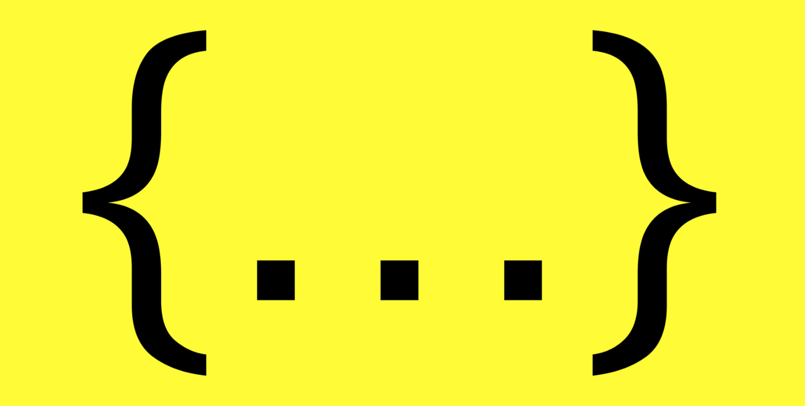

# [Javascript] ES6 Spread Syntax 展開語法
# Spread Syntax 以 … 表示。
在自然用語中，我們會使用 … 作為一種表示「剩下的、其他」的意思。
在 Javascript ES6 中，納入了這種 三個點(...) 的用法。可以很輕鬆的表示 Array 中 「剩下的」Elements，或是 call function 時給予 「其他的」parameters。
Spread Syntax 允許在創建 Array 時，將一個 Array、或 string 在語法層面展開 (expand) 其內容成為個別數值 (Value)；還可以在 創建 Object 時，將來源 Object 按照 key-value 的方式展開；或是在 function call 時對傳入參數、接收參數進行展開」的速寫語法 — MDN doc 。
講起來很饒口，我們直接來看幾個例子會更快瞭解。
# 將 array array1 的內容展開給 array2
以往我們要將 array2 的內容擴展給 array1 要不就是用迴圈一個一個倒過去 (例如下面例子)
var array1 = [1, 2, 3, 4];
var array2 = [5, 6, 7, 8];
array2.forEach( num => array1.push(num) )
不然就是用 Array.concat() (例如下面例子)
var array1 = [1, 2, 3, 4];
var array2 = [5, 6, 7, 8];
array1 = array1.concat(array2)
如今，有了使用 Spread Operator 我們就可以很優雅的表示這個過程。
/** spread array example */ | |
var array1 = [1, 2, 3, 4]; | |
var array2 = [5, 6, 7, 8]; | |
array2 = [ ...array1, ...array2 ] // [1, 2, 3, 4, 5, 6, 7, 8] |
# 將 string str1 的內容展開給 result_ary
由於 Javascript 可以將 string 視作 character array 般巡行 (類似 C 中的字元陣列)，因此我們利用此特性將 string 展開成 array。
/** spread array example */ | |
var str1 = "hello"; | |
var result_ary = [...str1] // ["h", "e", "l", "l", "o"] |
# 將 Object object1 的內容展開給 object2
除了 Array 的擴展之外我們也可以使用在 Object 上。以往我們在將 object1 的內容給 object2 時，如同 array 的做法，不是使用迴圈一個一個 assign (如下面例子)
var object1 = {"a": 1, "b": 2, "c": 3, "d": 4};
var object2 = {"e": 5, "f": 6, "g": 7, "h": 8};
for ( let key in object1 ) {
// 將 object1 的內容在 object2 中創建
object2[key] = object1[key];
}
不然就是使用 Object.assign (如下面例子)
var object1 = {"a": 1, "b": 2, "c": 3, "d": 4};
var object2 = {"e": 5, "f": 6, "g": 7, "h": 8};
Object.assign(object2, object1);
在 Object 方面，我們也可以使用 Spread Syntax 優雅地完成以前需要大費周章才能達成的目標
var object1 = {"a": 1, "b": 2, "c": 3, "d": 4};
var object2 = {"e": 5, "f": 6, "g": 7, "h": 8};
// 將 object1, 跟 object2 展開成新的 object 給 object2
object2 = {...object1, ...object2};
這邊要注意的是，若是 object2 中有 key 是與 object1 相同的話，輸出的內容可能會因為 object2 較晚展開，而覆蓋 object1 對於此 key 所設定的內容。
# 在 Function parameters 中使用 Spread Syntax
Javascript 是一個很靈活的程式語言，他可以允許動態數量的參數內容。
因此我們可以在定義參數時利用 Spread Syntax 來表示 「剩下要傳入的參數們」 這種概念。
以下方這個 加法 function 為例，平常我們只想做兩個數值的相加，但是利用 Spread Syntax 我們可以做到兩個以上數值的相加。
var add = (a, b, ...others) => { | |
if (!others) return a + b; | |
return a + b + others.reduce( (total, current) => current + total, 0 ) | |
} | |
console.log( add(1, 2) ) // 3 | |
console.log( add(1, 2, 3) ) // 6 | |
console.log( add(1, 2, 3, 4, 5, 6, 7, 8, 9, 10) ) // 55 |
在上面的 code 中， others 會將剩下傳入的參數 「全部接收」 ，變成一個 array，因此當我們使用 add(1, 2, 3, 4) 時，其實 others 得到的會是 [1, 2, 3, 4] 這樣的結構。
如此寫法的好處在於其 大大簡化了獲取多餘參數的寫法。
以往我們可能需要利用 arguments.length 判斷參數數量，並且手動切出額外的參數才能進行相應的動作，如今有了 Spread Syntax 後我們便不需要進行如此繁瑣的事項了。
以往我們可能需要這樣寫
var func1 = ( param1 ) => { | |
var params = Array.prototype.slice.call( arguments ); | |
var opts = params.splice(1, params.length-1); // 從第一格開始切到最後一個參數 | |
console.log("param1", param1, "opts", opts); | |
if (opts.length == 1) { console.log( "do something ... only 1 opts" )} | |
else if (opts.length == 2) { console.log( "do things that has 2 opts" )} | |
else if (opts.length == 3) { console.log( "do things that has 3 opts" )} | |
else { console.log( "do else " )} | |
} |
如今上面的程式我們可以改成
var func1 = ( param1, opts ) => { | |
console.log("param1", param1, "opts", opts); | |
if (opts.length == 1) { console.log( "do something ... only 1 opts" )} | |
else if (opts.length == 2) { console.log( "do things that has 2 opts" )} | |
else if (opts.length == 3) { console.log( "do things that has 3 opts" )} | |
else { console.log( "do else " )} | |
} |
# 利用 Spread Syntax 於傳參時展開傳入的參數
我們能在 Function 定義參數時使用 Spread Syntax ，當然也能在 Function call 時使用。
假定有一個 function 如下表示，接收 4 個參數。
function func1(a, b, c, d) {
console.log("a:", a, ", b:", b, ", c:", c, ", d:", d)
}
我們以往需要 value by value 地傳入各自的數值：
func1(1, 2, 3, 4) // a:1, b:2, c:3, d:4
如今可以利用 Spread Syntax 將 array 傳入時自動展開，會得到如上相同的效果。
func1(...[1, 2, 3, 4]) // a:1, b:2, c:3, d:4
要注意的是，若是 array 中的 elements 數量多於 function 接收的參數數量， a, b, c, d 依然只會吃到 1, 2, 3, 4 。array 剩下的內容要從 arguments 去獲取喔！
例如下面的例子：
function func1(a, b, c, d) {
console.log("a:", a, "b:", b, "c:", c, "d:", d);
console.log("params", Array.prototype.slice.call( arguments ))
}
# 結論
其實 Spread Syntax 就是一個語法糖，不了解基本上也不會怎麼樣。但是多學到一種寫法，可以讓我們的程式碼更加優美，何樂而不為呢？
如果這篇對你有幫助，請不要吝情於給我一點鼓勵。